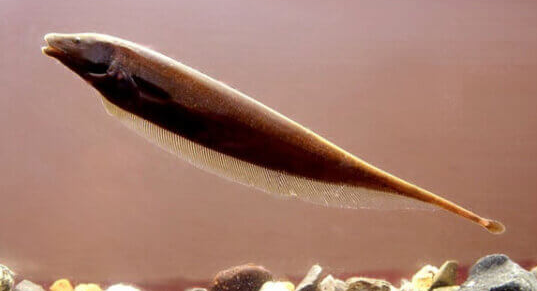

Systématique
- Ordre : Gymnotiformes
- Famille : Apteronotidae
- Genre : Apteronotus
- Espèce : A. leptorhynchus

Apteronotus leptorhynchus est un poisson-couteau sud-américain caractérisé par son corps allongé, comprimé latéralement, et son museau long et mince (d'où l'étymologie lepto = mince, rhynchus = bec/museau).
Sa coloration varie du brun foncé au noir, souvent marquée par une ligne claire ou blanche sur le dos et parfois une bande blanche à la base de la queue. Il ne possède pas de nageoires pelviennes ni dorsales, mais une très longue nageoire anale qui ondule pour permettre la propulsion, lui conférant une nage gracieuse en avant comme en arrière. Il possède également une petite nageoire caudale filiforme.
Comme les autres Gymnotiformes, c'est un poisson faiblement électrique qui émet des décharges de faible voltage pour s'orienter (électrolocation) et communiquer, ce qui est essentiel pour ce poisson à l'activité principalement nocturne.
Espèce strictement nocturne et benthique. Il passe la journée caché dans des tubes, des racines ou des grottes, ne sortant qu'à l'extinction des feux pour chasser.
Il est territorial envers ses congénères et les autres poissons électriques, avec lesquels des combats peuvent survenir. Il est cependant relativement paisible avec les autres espèces de taille suffisante pour ne pas être considérées comme des proies. Il est intelligent et curieux une fois acclimaté.
Mode : ovipare.
La reproduction en aquarium est très rare et peu documentée chez l'amateur, bien qu'elle soit réalisée en laboratoire pour l'étude neurologique. C'est un diffuseur d'œufs qui ne prodigue pas de soins parentaux.
Les mâles courtisent les femelles par des modulations de leurs signaux électriques (chirs).
Dimorphisme sexuel : difficile à observer visuellement. Les mâles matures ont tendance à avoir un museau plus long et une tête plus robuste que les femelles. La différence se fait surtout par l'analyse des fréquences de décharge électrique (EOD), souvent plus élevées chez les femelles.
Espérance de vie : 5 à 10 ans, voire plus en conditions optimales.
Il habite les rivières tropicales à courant modéré à rapide d'Amérique du Sud. Il fréquente les zones encombrées de bois mort, de racines et de cavités rocheuses où il trouve refuge durant le jour. L'eau y est souvent trouble ou teintée, rendant l'électrolocation indispensable.
Répartition

Origine naturelle :
- Larges bassins de l'Amazone et de l'Orénoque.
- Présent au Brésil, en Colombie, au Venezuela, au Guyana et au Pérou.
- Rivières côtières des Guyanes.
Son aire de répartition est vaste, couvrant une grande partie du nord du continent sud-américain.
Paramètres de maintenance
Température : 23 à 28 °C.
pH : 6,0 à 7,5 (neutre à légèrement acide).
GH : 5 à 15 °dGH.
Courant : apprécie un courant modéré et une eau bien oxygénée.
Volume conseillé : minimum 250 à 300 L pour un individu seul.
Attention : sensible aux médicaments (cuivre) et aux changements brutaux de paramètres (poisson "sans écailles").
Régime alimentaire
Régime : carnivore prédateur.
Il se nourrit principalement d'invertébrés aquatiques (larves d'insectes, vers).
En aquarium, il préfère largement la nourriture vivante ou congelée : vers de vase, tubifex, vers de terre, artémias, krill et petits morceaux de poisson ou de crevette. Il accepte difficilement les granulés secs, surtout au début.